If too few categories are used, the map may obscure the contours
of the data distribution. Too many categories are just as fruitless and
equally unlikely to reveal any existing spatial patterns in the
dataset.
Indeed, it is difficult for most map readers to distinguish among more
than about seven categories. Beyond seven, a map becomes little more
than
an illustrated table. Most statistical maps will use between three and
seven categories.
B. Comparison of maps using different ranging methods
These three maps each have five ranges of data, but they were determined using different methods.
- Equal step
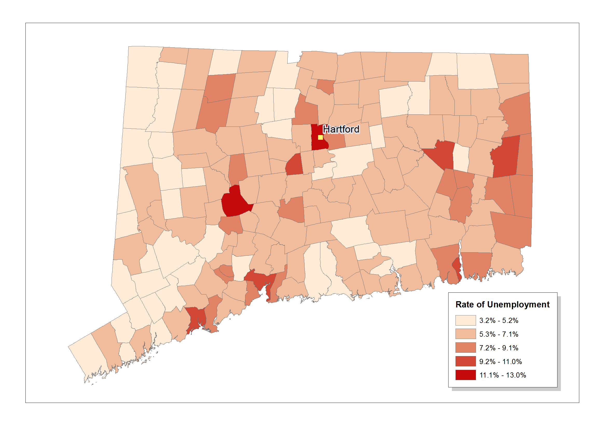
- User defined ranges
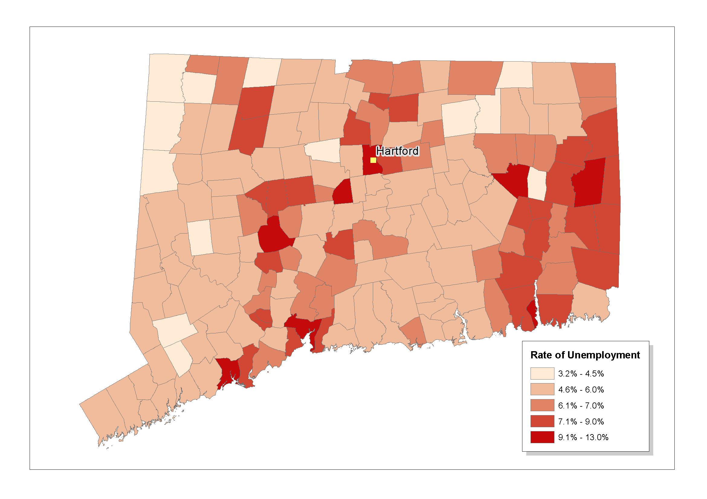
- Quantile
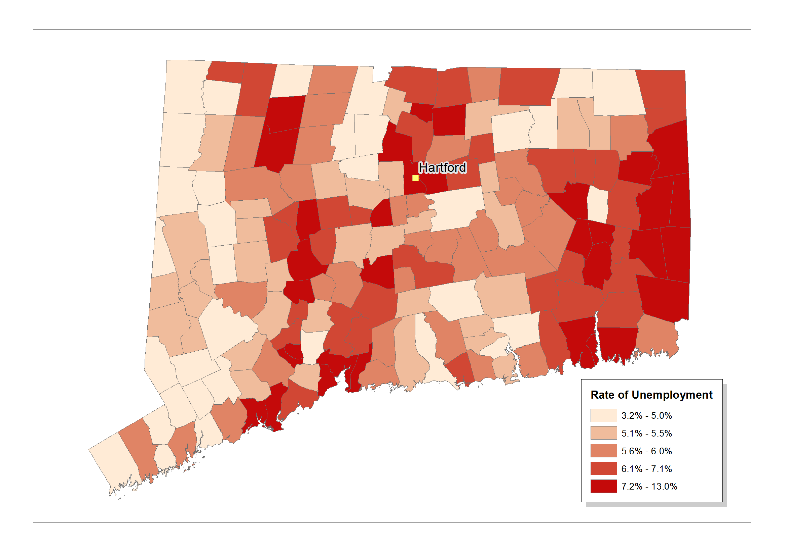
Even though these maps were developed from the same
dataset, they seem to convey quite different spatial patterns. Some
seem to stress the lowest values in the distribution, others the
highest.
The point is that cartographers use different ranging methods to
generalize
different types of data distributions. Each method is suited to a
particular
"shape" distribution. Therefore, the first step in preparing a
choropleth
map is to explore the dataset to come to an understanding of its
underlying
distribution.
6.3 Exploring your data and its "shape"
You should get to know the shape of any statistical distribution you
plan to map. Plot a scattergram or histogram of the data and employ
basic
descriptive statistics to explore its distribution. Many automated
mapping
programs provide options which graph data and will automatically
calculate
descriptive statistics like mean, mode, median, range, and standard
deviation.
Take advantage of these options explore your data.
Be aware also that mathematical transformations change the shape of
a distribution--implying that the ranging method must change also.
| Distribution Name and Its Main Parameters |
Probability Density Function (PDF) |
Cumulative Distribution Function (CDF) |
| |
|
|
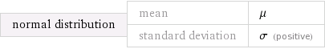
|
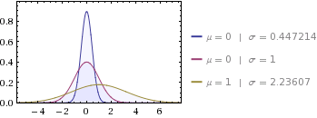 |
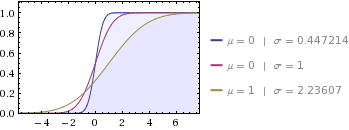 |
| |
|
|
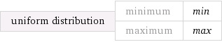 |
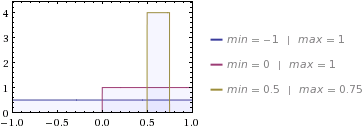 |
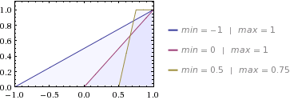 |
| |
|
|
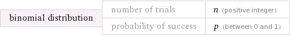 |
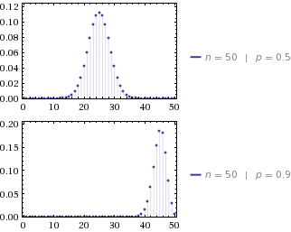 |
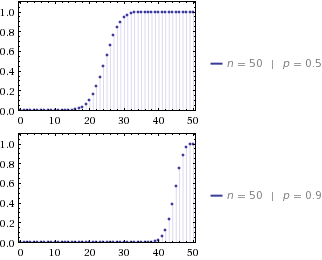 |
| |
|
|
|
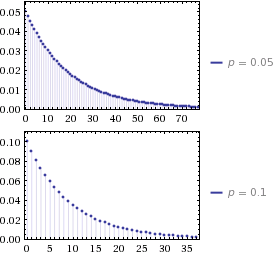 |
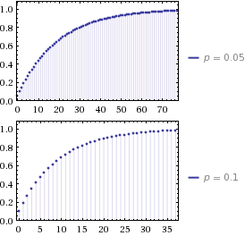 |
Not all distributions are "well-behaved". Sometimes you can encounter a bimodal (double-peaked) shaped distribution.
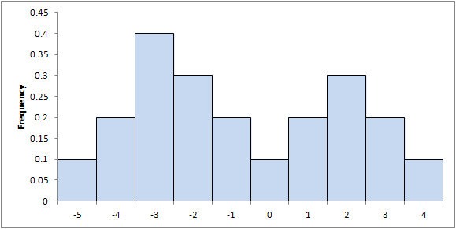
6.4 Commonly employed ranging methods for
assigning
cutpoints
The articles listed below by Michael Coulson (1987), Ian Evans (1977),
and George Jenks (1963) provide detailed overviews of the ranging
methods
commonly employed by cartographers as well as necessary computational
algorithms.
It is essential that you consult these articles as soon as possible
because
they cover many more techniques than can be discussed here, and in far
greater detail. The following discussion will simply highlight a few of
the methods that many computer systems provide as "defaults."
In generalizing statistical distributions, cartographers use
the
term "cutpoint" to refer to the boundaries between categories. All the
following methods pertain to the calculation or assignment of these
cutpoints.
Remember, all systems of classification depend upon the use of
"exhaustive"
and "mutually exclusive" categories. Exhaustive means that the
categories
classify all values of a given data range--no values within that range
are omitted from the classification system. Mutually exclusive means
that
any given observation can be placed in one and only one category - data
categories cannot overlap. Please be sure, if you are using an
automated
mapping system, that the the system does not assign overlapping
cutpoints
automatically when it creates the map legend.
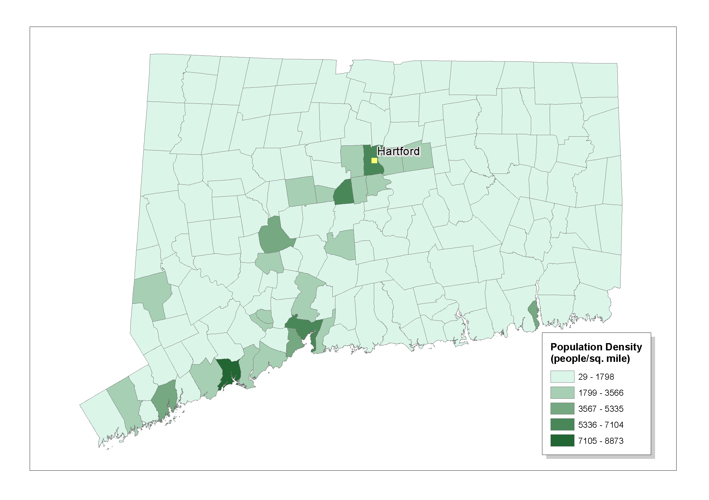
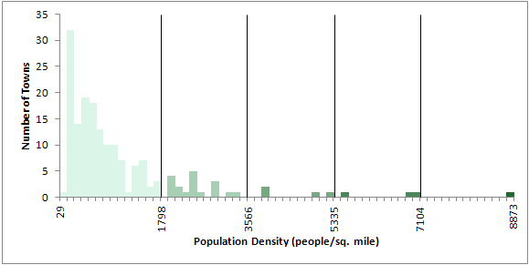
This method takes the difference between the low and high values of
a distribution and divides this difference into evenly spaced steps. If
the 0 and 10 were the low and high values of a distribution and you
decided
to divide the data into five categories, the cut-points would be: 0, 2,
4, 6, 8, and 10.
The method is useful for mapping rectangular (uniform)
distributions. It
is also useful for exploratory analysis, at times when you wish to
develop
a "feel" for the characteristics of a data distribution.
B. Quantiles and Percentiles
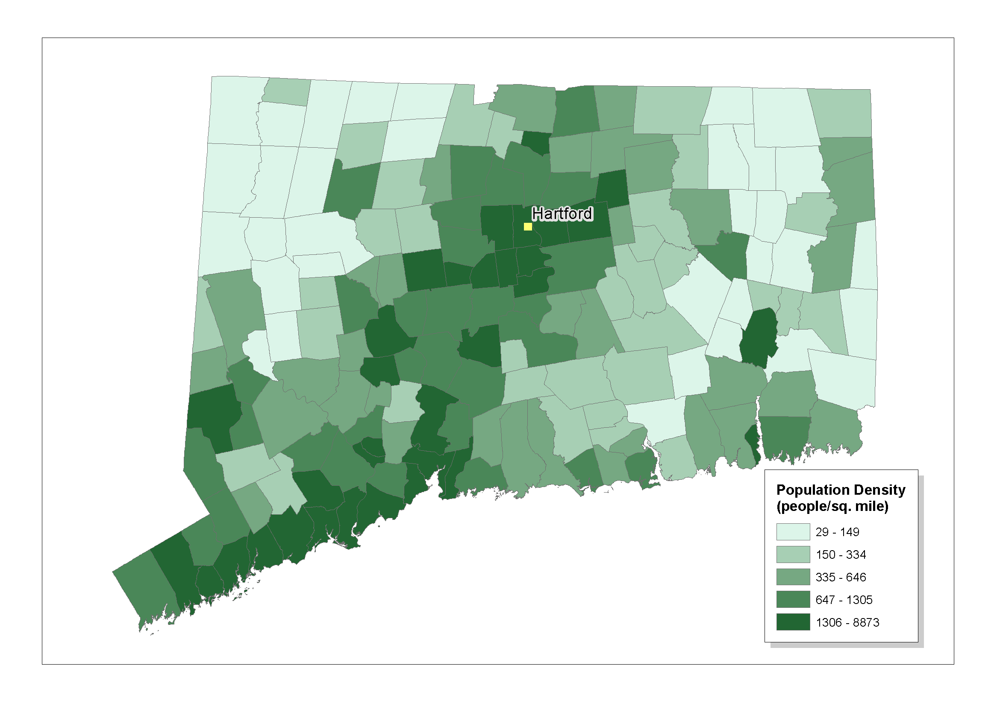
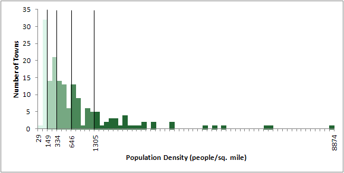
This method arranges your observations from low to high and places
equal numbers of observations in each category. If your data included
one
hundred observations and you wished to divide the data into five
categories
(quantiles), the lowest twenty observations would be placed in the
first
category, the next twenty in the second, and so forth until the highest
twenty observations were placed in the last category. The term
quartiles
is used when the data is divided into four categories, quantiles when
five
are used, sextiles for six, septiles for seven, and so forth. Note that
when data is divided in this way, the cutpoints of the distribution may
be arranged at irregular intervals along the span of the distribution.
The method is useful for mapping rectangular
distributions. It
is also useful for exploratory analysis, at times when you wish to
develop
a "feel" for the characteristics of a data distribution.
C. Arithmetic Progressions
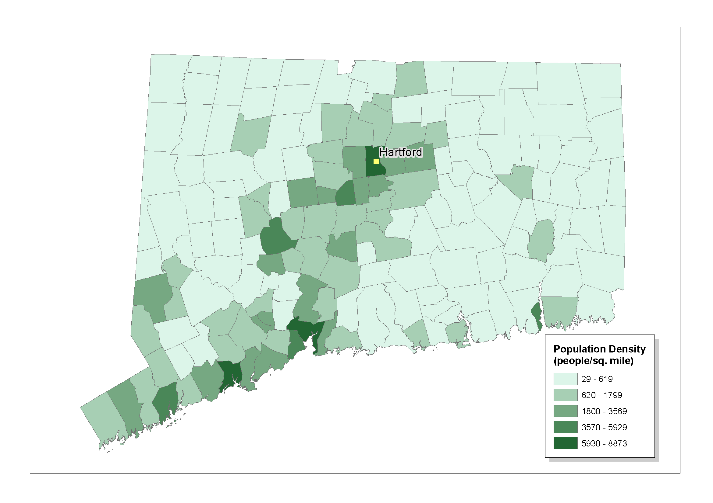
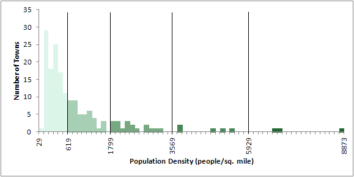
In this method, the widths of the category intervals are increased
in size at an arithmetic (that is, additive) rate. If your first
category
is one unit wide and you choose to increment the width one unit at a
time,
the second category would be two units wide, the third three units
wide,
and so forth to the end of the distribution.
This method can be applied effectively to data that is
J-shaped
with a peak at the low end of the distribution.
D. Geometric Progressions
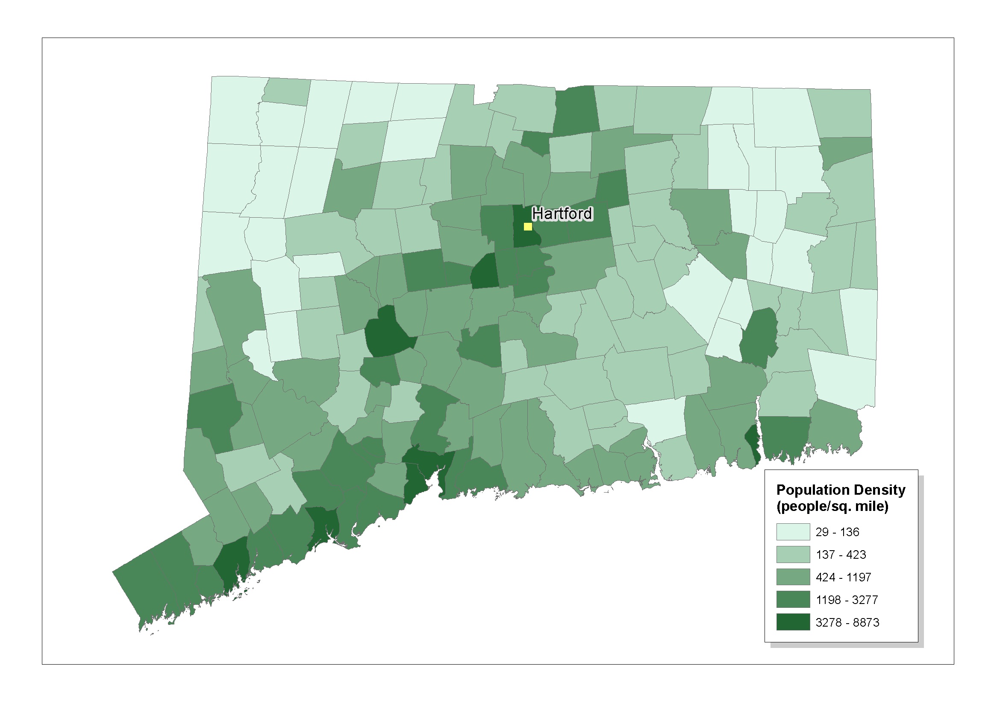

In this method, the widths of the category intervals are
increased
in size at a geometric (that is, multiplicative) rate. If your first
category
is 2 units wide, the second would be 2x2 or 4 units wide, the third
2x2x2
or 8 units wide, and so forth to the end of the distribution.
This method can be applied effectively to data that is
J-shaped
with a peak at the low end of the distribution but with a long
"stretch"
between low and high values.
E. Inverse Methods
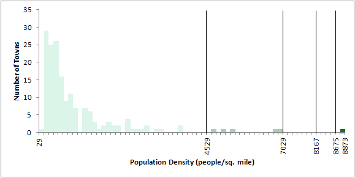
If your data is J-shaped with a peak at the high end of
the distribution,
the inverses of the arithmetic and geometric progressions can be
employed.
By inverting the cutpoints, the smallest intervals between cutpoints
will
be closest together at the high end of the distribution.
F. Jenk's Method
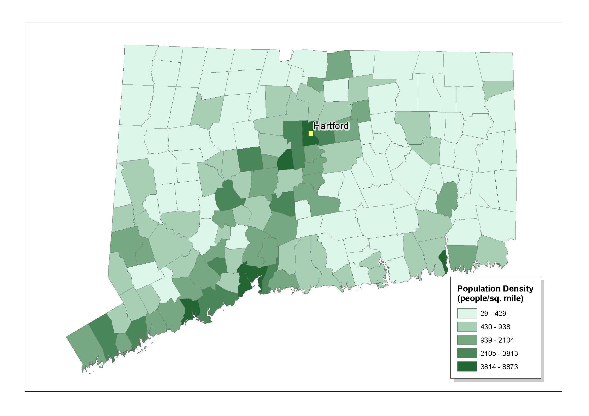
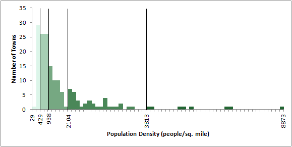
This is a sophisticated statistical method to split the data into different classes.
The categories are found by maximizing the variance between the classes and minimizing the variance within every class.
G. Standard Deviation
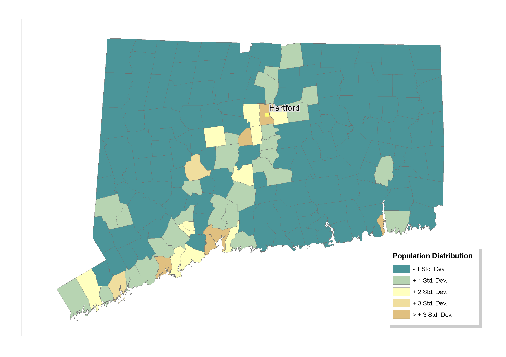
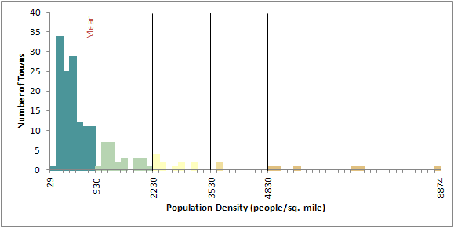
6.5 Symbolizing the Category Ranges
Once you have divided your data into categories, you must use the
visual
resources at your disposal to symbolize them on the map. Because your
interval-ratio
data have now been ordered into ordinal categories, the idea is to use
color, value, or pattern to create a visual index between category
symbols
and their value. You can order the symbols using:
6.6 Statistical annotations are needed for
some
complex datasets
In some situations, you might find it useful to add statistical
annotations to your map. These may indicate to the reader the nature of
the statistical distribution being displayed and the means by which it
was classified. Sometimes it is sufficient to note some of the
descriptive
statistics for a distribution, such as its range, mean, median, and
mode.
At other times, you may wish to add bar graphs, scattergrams, or other
statistical diagrams.
Data Sources
Connecticut Department Of Labor. Web Address: http://www.ctdol.state.ct.us/
Minnesota Population Center.
National Historical Geographic Information System: Version 2.0. Minneapolis, MN: University of Minnesota 2011.
Web Address: http://www.nhgis.org/
Wolfram|Alpha online computing environment. Web address: http://www.wolframalpha.com/
Further Reading
Coulson, Michael R.C. 1987. In the matter of class
intervals
for choropleth maps: With particular reference to the work of George F.
Jenks. Cartographica 24 (2): 16-39.
Evans, Ian S. 1977. The selection of class intervals. Transactions
of the Institute of British Geographers New Series 2: 98-124.
Jenks, George F. 1963. Generalization in statistical
mapping.
Annals
of the Association of American Geographers 53: 15-26.
Jenks, George F. and Duane S. Knos. 1961. The Use of
Shading
Patterns in Graded Series. Annals of the Association of American
Geographers
51: 316-334.

Go
on to Problems of Realizing Ideals with Computer Systems
 Return
to Contents
Return
to Contents